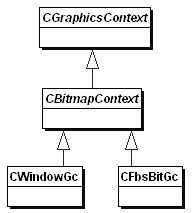

|
| |
The Bitmaps API provides extensions for bitmap devices of the abstract drawing device and context interfaces defined in the Graphics API. The key interfaces defined by it, used for drawing on the screen, are in fact abstract: the window server provides concrete classes for on-screen drawing which derive from these interfaces. The concrete device and context classes that the API does provide are normally only used by applications to draw to in-memory bitmaps.
CBitmapContext specialises a graphics context (CGraphicsContext) for bitmaps graphics. It provides extra functionality for:
clearing and copying rectangular areas
bitmap block transfer
setting pen colour to a grey level
setting the shadow mode
resetting the GC settings to their default values
The Window Server Client-Side API provides one implementation, CWindowGc, used for screen drawing. Another implementation, CFbsBitGc, is used for drawing to in-memory bitmaps.

|
CBitmapDevice specialises a graphics device (CGraphicsDevice) for bitmaps graphics.
The Window Server Client-Side API provides one implementation, CWsScreenDevice, for screen drawing. Another implementation, CFbsBitmapDevice, is used for drawing to in-memory bitmaps. A third, CFbsScreenDevice, is used (rarely) to access the screen directly, without the mediation of the window server.

Copyright ©2002 Symbian Ltd. 6.1-00174 |
|